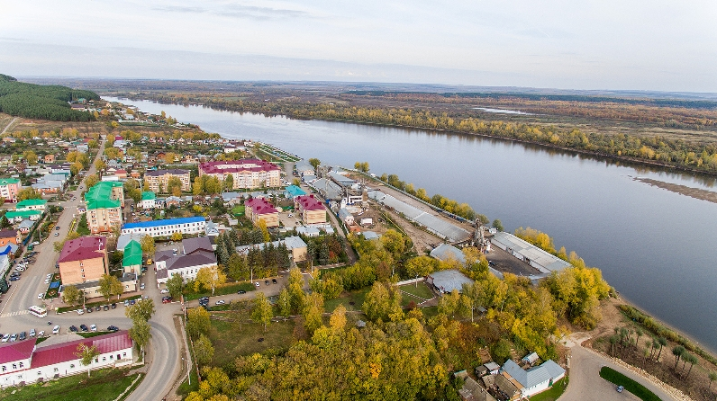

Мамадышский район (тат. Мамадыш районы) —
административно-территориальная единица и
муниципальное образование (муниципальный район)
в составе Республики Татарстан Российской
Федерации. Находится на северо-востоке республики,
на восточной части Русской равнины.
Административный центр — город Мамадыш.
Население
В 2020 году Мамадышский район вошёл в туристический проект «1001 удовольствие» с экскурсионной программой «КирменЖиены».
Гости района посещают крепость-форт «Кирменчук» и музей, расположенный в историческом центре Мамадыша.
На 2020 год в Мамадышском районе работают 68 общеобразовательных учреждений, среди которых одно удмуртское и одно марийское, сельхозлицей и профколледж.
В районе 38 сельских Домов культуры, 37 сельских клубов, Мамадышский районный Дом культуры, 54 библиотеки, четыре музея, детская школа искусств (с двумя филиалами),
Парк культуры и отдыха имени 60-летия Победы, работает три театра и четыре ансамбля[3].
В районе 19 объектов культурного наследия.
К ним относятся остатки городищ древних поселений, комплекс из 27 надгробий XIV века, а также исторические здания, например, здание городской ратуши и гостиного двора.
Эта постройка самая старая в городе — она была возведена в 1785 году после получения Мамадышем статуса уездного города. С 1910 по 1970 годы в здании располагалась пожарная часть